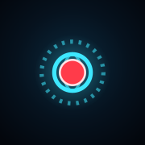

Record meeting
An icon that opens J.A.R.V.I.S. straight at Record a meeting. You still tap "Everyone here knows this is being recorded" before it starts.
- In Safari, tap Share, then Add to Home Screen, then Add.
- Open it from the new Record icon. The first time, sign in, and allow the microphone when it asks.